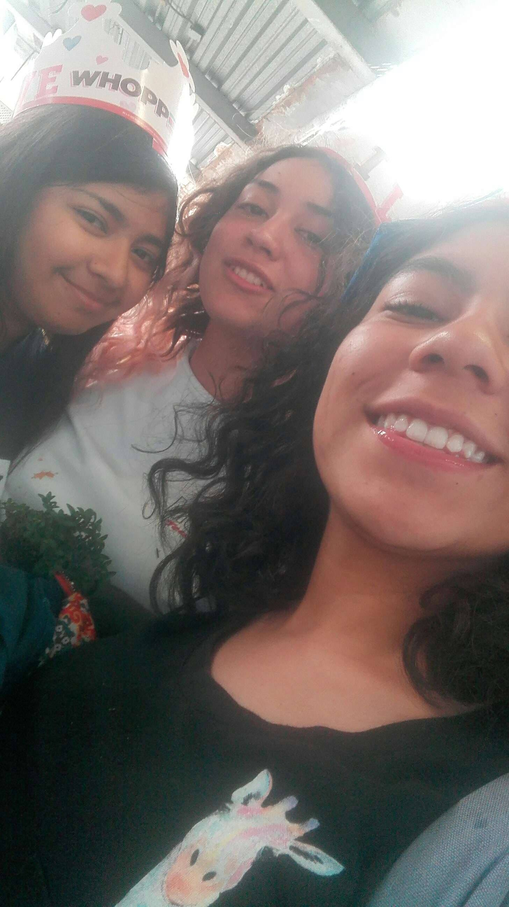
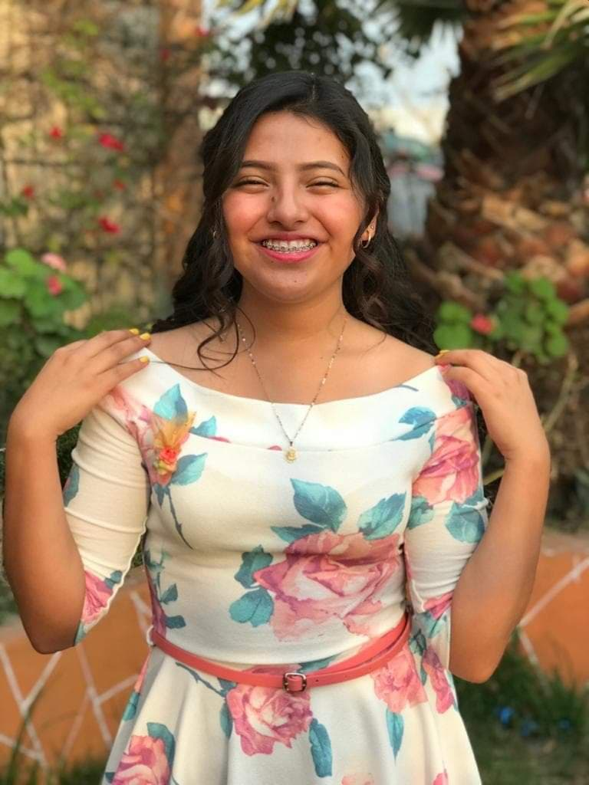
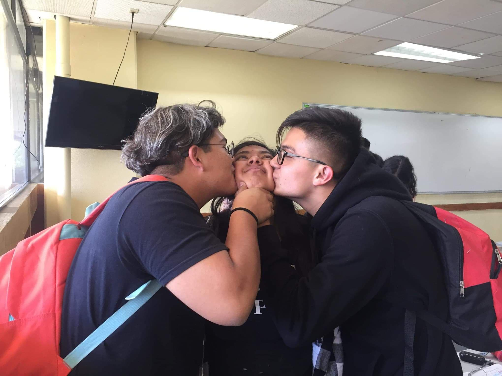

mis mejores amigos
tengo 5 mejores amigos con los cuales pasaba mis dias en la escuela
aylin y melani mis mejores amigas desde que entre a primer semestre las 3 tenemos una amistad muy linda ya que las 3 somos personas muy diferentes
ella es viridiana con ella empeze una amistad casi terminando el primer semestre pero en cuanto hablamos supe que seriamos grandes amigas por que somos muy parecidas y me gusta mucho estar con ella me hace reir mucho y es una persona que siempre tiene algo bueno que decirte.
ellos son diego y lobato, a diego lo conoci en segundo semestre ya que el era cambio de turno y nos hicimos grandes amigos ya que le gustaba jenny rivera y decia cosas muy raras, fue el unico de la tarde que me agrad.
lobato lo conozco junto con viri pero con el tengo una amistad muy grande ya que con el puedo hablar de cualquier cosa y es con quien mas convivo de todos ellos me cuida por que dice que estoy chiquita